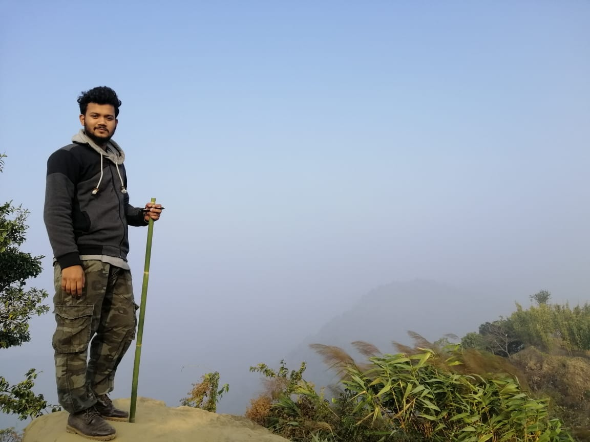
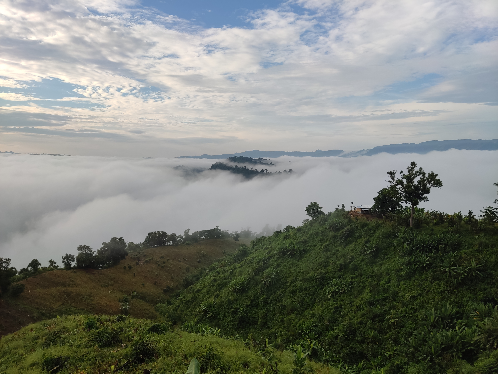
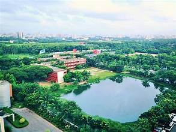
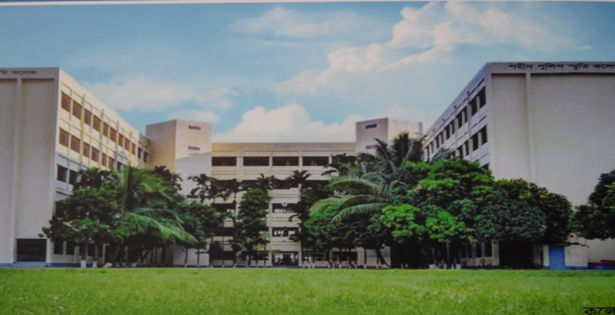
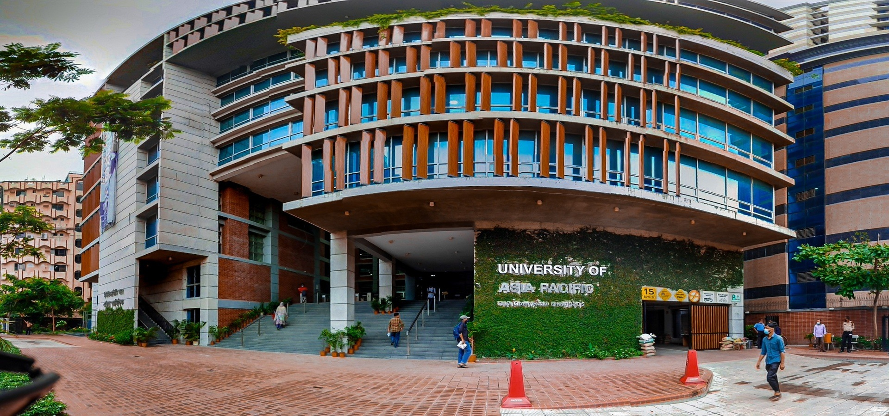
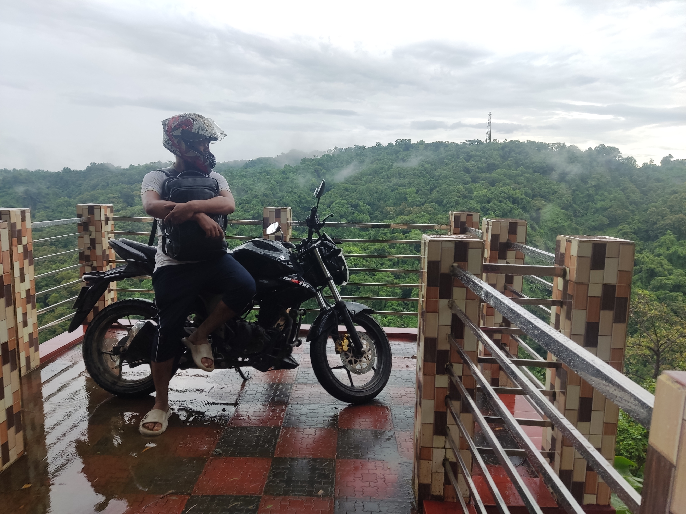
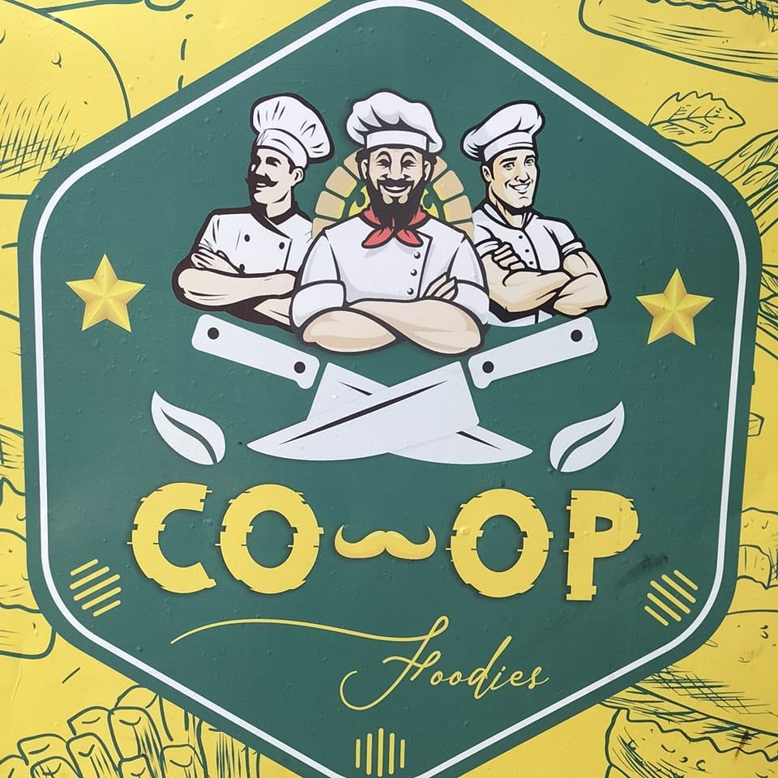
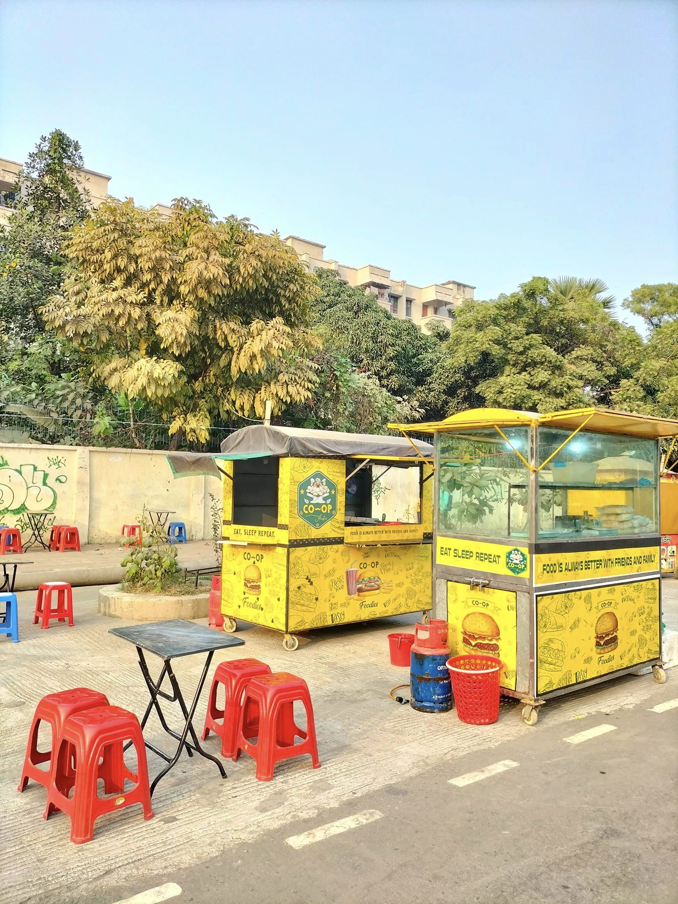
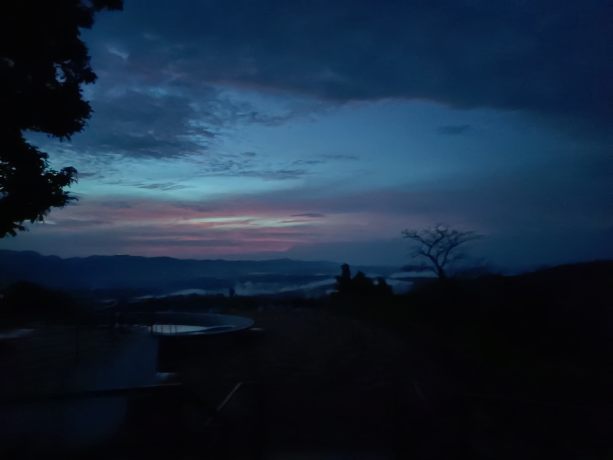
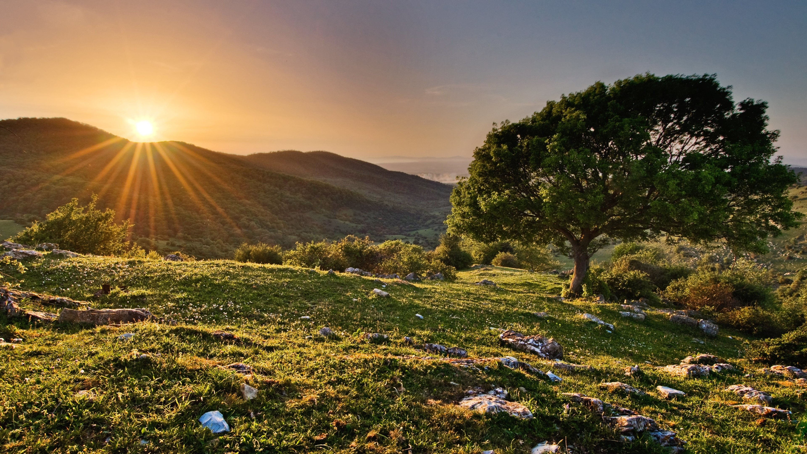

Travelling the whole world is my dream
I have travelled more than 25 district of bangladesh.My passion is to travel the world because Traveling opens doors to new cultures, perspectives, and experiences, enriching the soul with memories that last a lifetime. It's an adventure that broadens horizons and fosters a deeper understanding of the world we inhabit.

Tomatungi
One of my most favourite place in bangladesh.Which is situated on Bandarban district's Thanchi upazilla.

Sher-E-Bangla Nagar Govt Boys High School
This is my Primary And High school .I Studied there from class one to ten .I started there in the year 2007 and finished my SSC board exam in the year 2017.I got GPA:4.95 at my SSC examination.THose years are not Forgattable .

Shaheed Police Smrity College
This is my college.I've studied there in the 2017 to 2019.I passed my HSC examination from this institute.In the year 2019 I passed from this institution with science division and GPA - 3.92 . Those two years are like a dream .

University Of Asia Pacific
Iv'e started Studying at uap in the year 2020's spring semester.I'm Studying Bsc in computer science and engineering.Iv'e learned Many thing's here at my university.

Mirinja,Lama-Bandarban
Travelling is my passion.I haven't done anything yet without travelling .

Co-oP Foodies
This is the only thing which I have done in my entire life. This is my first business.I have started with one foodcart,Now I have two foodcarts at the same place . And i was the cook for the cart at first now i have seven people who works for me in my business.

This Is The Place
Where my shop is located.This is a small business startup With small capital money.Iv'e Learned Many small and vast Things about how to run a Business ,How to overcome difficulities,How to Deal With people and customers,And many more things By running This business .

Dawn At TOMATUNGI
There is Nothing more satisfying then travelling from a place to another.

Thanks for Visiting My Portfolio ,For Any Other Query Feel Free To Contact Me ,From TOP Right Corner
{kind=link}
{kind=link}
{kind=link}
{kind=link}
{kind=link}
{kind=link}
{kind=link}
{kind=link}
{kind=link}
{kind=link}